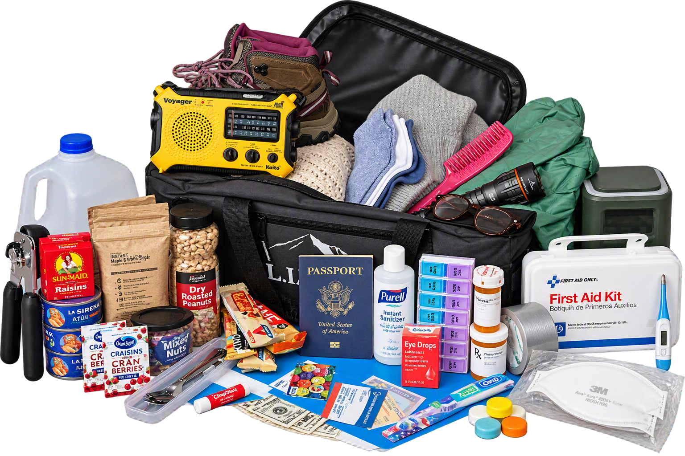
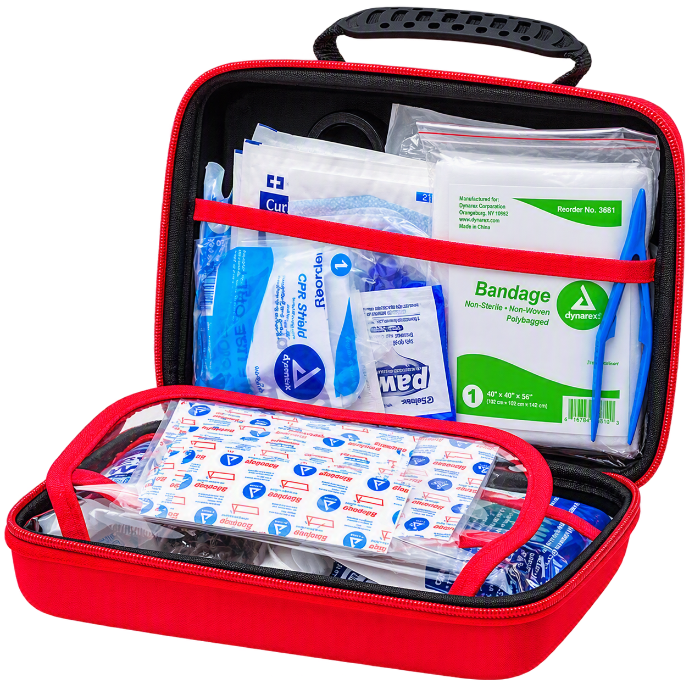
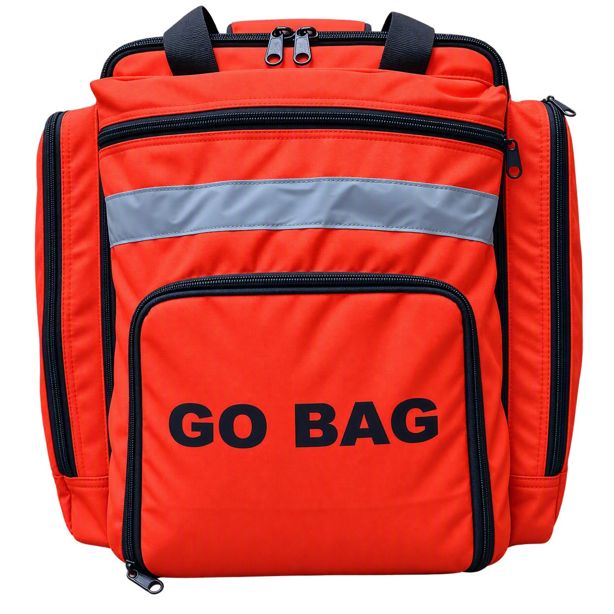
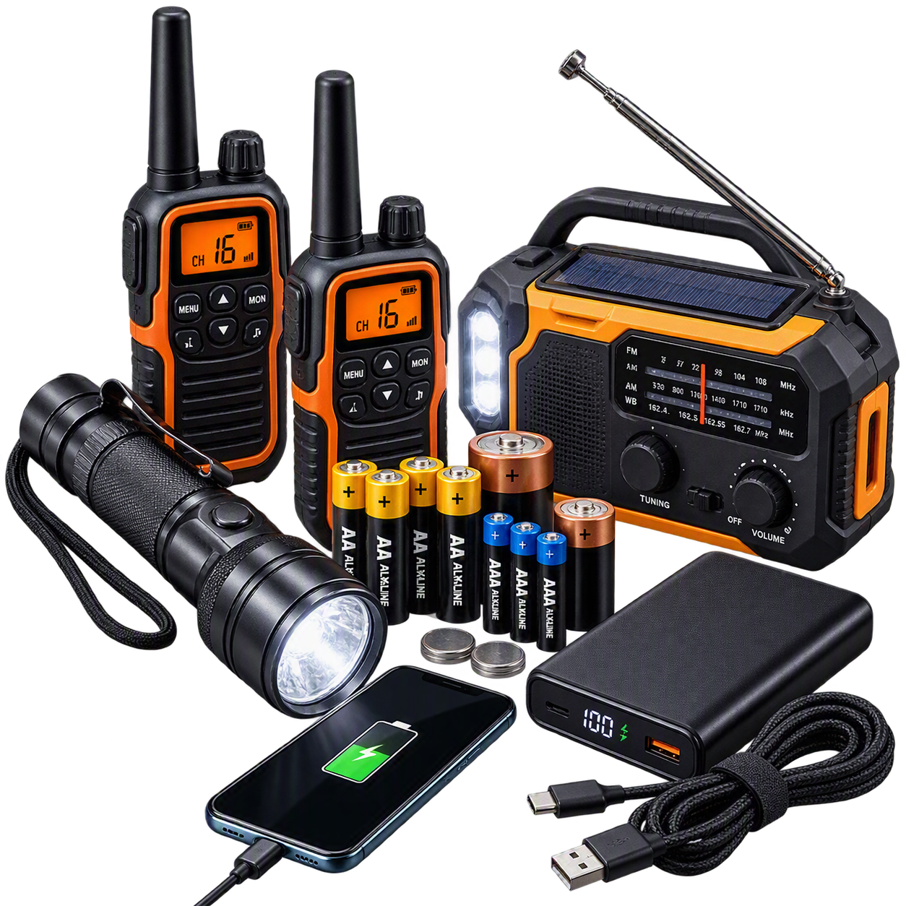
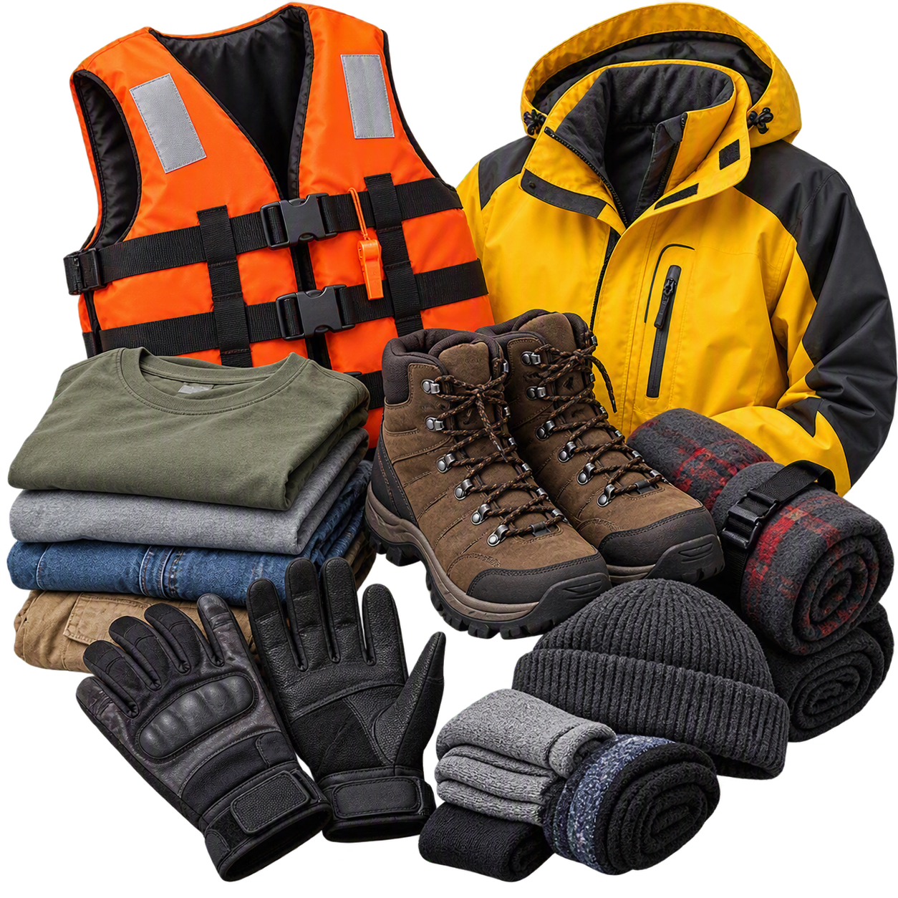
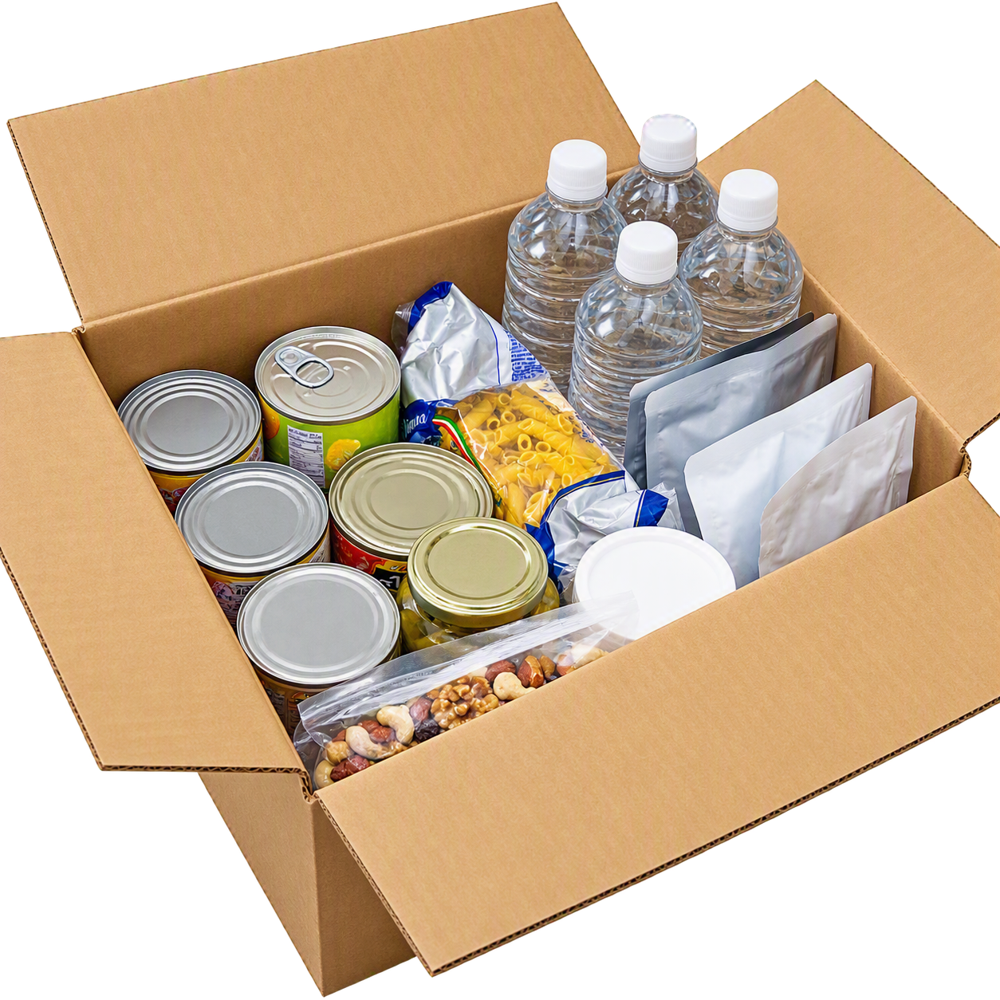
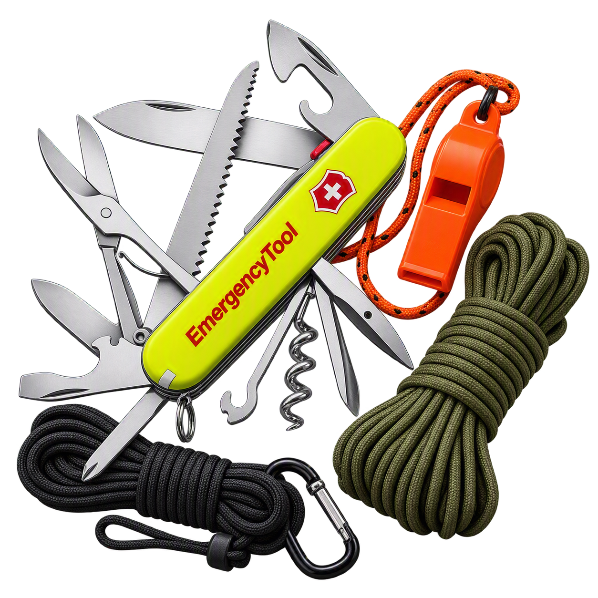

Emergency Kit
An emergency kit is a collection of essential supplies kept ready to help you cope during unexpected situations such as natural disasters, power outages, floods, earthquakes, severe storms, fires, or emergencies that require evacuation. An effective emergency preparedness kit combines important documents, emergency tools, communication equipment, a go-bag, protective clothing, food and water, and a well-stocked first aid kit. Together, these items help individuals and families remain safe, self-sufficient, and resilient during disasters and other emergency situations.

First-Aid Kit
A first aid kit enables immediate treatment of injuries while waiting for professional medical assistance. Basic supplies such as bandages, antiseptics, gauze, gloves, medications, and medical tape can help manage cuts, burns, sprains, and other common injuries. Prompt first aid can prevent complications, reduce infection risks, and potentially save lives during emergencies.

Go-Bag
A go-bag is a pre-packed emergency bag containing essential supplies needed for immediate evacuation. It typically includes food, water, clothing, medical supplies, flashlights, important documents, and communication devices. Having a go-bag ready allows individuals to leave quickly and safely when a disaster strikes without wasting precious time gathering necessities.

Batteries and Communication Tools
Power outages are common during disasters, making batteries and communication devices critical. Battery-powered radios allow people to receive weather alerts, evacuation notices, and emergency broadcasts when internet and cellular networks are unavailable. Extra batteries, power banks, and portable chargers help keep communication devices functioning, allowing people to contact loved ones and emergency services when needed.

Important Documents
Important documents such as identification cards, birth certificates, insurance policies, medical records, land titles, and emergency contact information are essential during emergencies. These documents help prove identity, access government assistance, process insurance claims, obtain medical care, and reunite with family members. Keeping copies in a waterproof and portable container protects them from damage.
Clothing and Protection
Proper clothing and protective gear help safeguard individuals from environmental hazards. Sturdy boots protect feet from debris and sharp objects, gloves shield hands during cleanup and rescue activities, jackets provide warmth and protection from harsh weather, and life vests help prevent drowning during floods. Extra clothing also ensures comfort and hygiene when access to laundry facilities is limited.

Canned-Foods and Water
Food and water are among the most critical survival necessities. Clean drinking water prevents dehydration and reduces the risk of waterborne illnesses. Non-perishable foods such as canned goods, energy bars, dried foods, and ready-to-eat meals provide essential nutrition when stores, markets, and supply chains are disrupted. These items require minimal preparation and have long shelf lives.

Emergency Tools
Emergency tools, such as multi-tools, utility knives, whistles, ropes, flashlights, and duct tape, help people address immediate challenges during a disaster. These tools can be used for repairs, cutting materials, signaling for help, opening supplies, securing shelters, and performing basic rescue tasks. Their versatility makes them invaluable in emergency situations.
